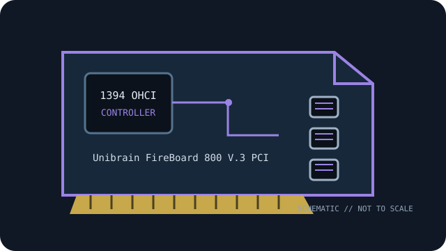

[ IEEE 1394 CONTROLLER // EXPANSION CARDS ]
Unibrain FireBoard 800 V.3 PCI
Three-port IEEE 1394b FireWire 800 adapter for conventional PCI systems. Verify the exact board label and revision before service.

MODEL SCOPE: Unibrain FireBoard 800 V.3 PCI. Specification distinctions below identify 1394a/1394b rates, physical bus and power limitations; host OS and driver support can change by revision and release.
Specifications and compatibility
| Exact model / SKU | Unibrain FireBoard 800 V.3 bulk part 1237; hardware FireAPI/Fire-i SDK-license part 1723. |
|---|---|
| Controller chipset | Texas Instruments TSB82AA2B 1394b OHCI controller plus TSB81BA3D three-port 1394b transceiver/arbitrator PHY. |
| PCI bus / lanes | Conventional 32/64-bit PCI card, not PCI Express; check motherboard slot voltage/keying and bus support. |
| IEEE 1394a rate | Supports IEEE 1394a / FireWire 400 modes up to 400 Mb/s with suitable bilingual devices and cables. |
| IEEE 1394b rate | IEEE 1394b / FireWire 800, up to 800 Mb/s on compatible links. |
| Ports and connectors | Two external and one internal bilingual 9-pin IEEE 1394b ports; the internal port can support 1394a devices with suitable wiring/cable. |
| Power / bus-power notes | Internal 4-pin Molex auxiliary-power connector; Unibrain’s specification does not state the port current limit. Use the PSU input as directed and confirm the bus-power rating before powering peripherals. |
| OS driver compatibility | Unibrain lists Windows XP/7/8/10, macOS 10.4+ and Linux for this legacy line. These versions do not ensure current OS or application support; verify an available OHCI driver for the target system. |
| Host compatibility | Requires conventional PCI (manufacturer describes 32/64-bit PCI); confirm slot voltage, BIOS/OS legacy PCI support and OHCI driver availability. PCIe slots are not a direct substitute. |
Installation and archival notes
- Match the card’s printed model/revision and connector layout to the cited maker documentation; do not infer a controller IC or current limit from the connector alone.
- IEEE 1394 link rate is negotiated with the peripheral and cable. A FireWire 800 connector does not make a 400-Mb/s device or cable operate at 800 Mb/s.
- Use ESD precautions; validate system bus wiring, driver version, peripheral power source, and application-level compatibility before replacing a working legacy host.
Manufacturer and standards sources
- Unibrain — FireBoard 800 V.3 1394b PCI adapterManufacturer product reference for the named part; check the specific board revision and documentation availability.
- Texas Instruments — TSB82AA2B 1394b OHCI controllerAdditional maker documentation or official model-family reference.
- IEEE — IEEE 1394-2008 standardIEEE 1394 bus/protocol standard reference; card-level details are in the manufacturer documentation.
- Linux kernel — FireWire subsystem documentationOHCI/FireWire software-driver reference; platform-specific support remains OS-release dependent.